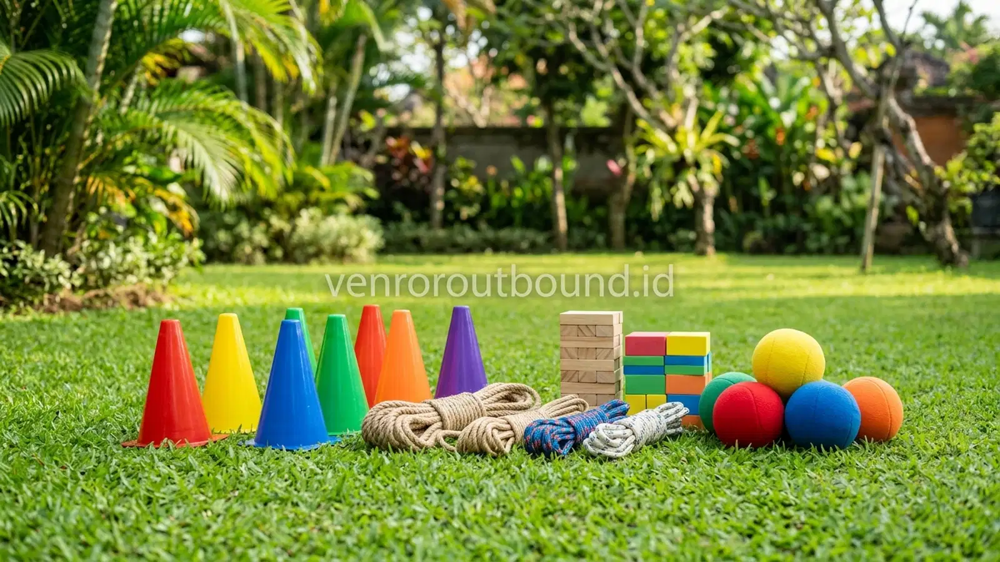

Bagaimana Cara Mengatur Budget Family Gathering Komunitas?
Jawaban singkat: Mengatur budget family gathering komunitas dapat dimulai dengan memilih format kegiatan satu hari, menentukan prioritas pengeluaran, dan menyesuaikan lokasi serta konsumsi dengan jumlah peserta. Aktivitas fun games juga dapat dirancang menggunakan perlengkapan sederhana sehingga anggaran tidak hanya terfokus pada permainan. Kuncinya adalah membuat skala prioritas, menghitung biaya per peserta, serta menyediakan cadangan untuk kebutuhan tak terduga.
Menyelenggarakan acara kumpul bersama bagi sebuah komunitas hobi, paguyuban alumni, rukun warga, maupun kelompok arisan keluarga selalu menghadirkan tantangan tersendiri bagi pihak panitia. Di satu sisi, ada ekspektasi tinggi dari seluruh anggota agar acara berlangsung meriah, berkesan, dan penuh tawa. Namun di sisi lain, panitia dibatasi oleh ketersediaan kas bersama atau besaran iuran sukarela yang harus dijaga agar tetap terjangkau oleh seluruh kalangan.
Sering kali muncul anggapan keliru bahwa acara gathering yang berkesan harus selalu berbiaya mahal dengan menyewa resort mewah atau memesan katering premium. Padahal, esensi sejati dari family gathering bukanlah pada kemewahan fasilitas fisiknya, melainkan pada kualitas interaksi antaranggota keluarga yang hadir. Dengan perencanaan finansial yang cermat dan strategi pemilihan pos pengeluaran yang tepat, panitia dapat menyelenggarakan kegiatan yang hangat, kompak, dan penuh keceriaan tanpa membebani keuangan organisasi.
Komponen Biaya Family Gathering yang Perlu Dihitung
Langkah awal yang mutlak dilakukan oleh bendahara dan ketua panitia adalah memetakan seluruh pos pengeluaran secara transparan. Biaya family gathering pada dasarnya terdiri dari beberapa komponen inti yang saling berkaitan. Memahami rincian setiap pos memungkinkan panitia mengidentifikasi area mana yang dapat dioptimalkan tanpa mengurangi kenyamanan peserta.
| Komponen Biaya | Yang Perlu Dihitung | Cara Mengontrol Pengeluaran |
|---|---|---|
| Lokasi / Venue | Sewa area lapangan, aula teduh, atau gazebo kumpul | Bandingkan fasilitas gratis yang sudah termasuk dan pilih lokasi terbuka yang ramah anggaran |
| Konsumsi | Makan siang utama, snack pembuka, dan persediaan air minum | Sesuaikan porsi dengan konfirmasi kehadiran pasti (RSVP) dan hindari memesan menu berlebih |
| Aktivitas Games | Peralatan permainan dan fasilitator pemandu | Pilih format permainan kelompok sederhana atau pilih opsi paket kegiatan terpadu |
| Transportasi | Sewa bus bersama atau biaya bahan bakar rombongan | Gunakan skema carpooling (kendaraan pribadi bersama) jika lokasi relatif dekat |
| Dokumentasi | Dokumentasi foto, video kenangan, atau drone | Berdayakan anggota komunitas yang memiliki hobi fotografi sebelum menyewa jasa profesional |
| Dekorasi & Atribut | Banner backdrop foto bersama dan tanda pengenal regu | Prioritaskan kebutuhan utama banner foto dan gunakan pita warna sederhana untuk pembeda regu |
| Sound System | Pengeras suara lapangan dan mikrofon nirkabel | Cek apakah lokasi acara sudah menyediakan sound system standar secara cuma-cuma |
| Dana Cadangan | Biaya darurat medis ringan atau penambahan tak terduga | Sisihkan 10 hingga 15 persen dari total estimasi anggaran sejak awal penyusunan kas |
Dengan mengelompokkan komponen ke dalam tabel di atas, panitia tidak akan melewatkan pos pengeluaran kecil yang sering kali luput dari pencatatan awal namun membengkak di hari pelaksanaan acara.
Cara Menentukan Prioritas Anggaran
Ketika total estimasi biaya melebihi proyeksi dana iuran yang terkumpul, panitia dituntut untuk membuat skala prioritas yang objektif. Metode terbaik adalah membagi pos pengeluaran ke dalam tiga kategori: kebutuhan mutlak (must-have), kebutuhan pendukung (should-have), dan kebutuhan pelengkap (nice-to-have).
- Prioritas Utama (Must-Have): Kenyamanan fisik dan rasa kenyang peserta. Tempat berkumpul yang teduh dengan sanitasi bersih serta konsumsi yang layak merupakan hak mendasar setiap peserta. Jika dua hal ini terganggu, suasana acara akan langsung terpengaruh secara negatif.
- Prioritas Kedua (Should-Have): Alur aktivitas yang terstruktur. Permainan kebersamaan (fun games) dan pemandu yang mampu mencairkan suasana sangat penting agar peserta tidak hanya duduk terpisah dalam kelompok kecilnya masing-masing.
- Prioritas Ketiga (Nice-to-Have): Doorprize mewah, seragam kaos khusus, dan dekorasi panggung yang rumit. Komponen ini dapat dipangkas atau disesuaikan dengan donasi sukarela dari anggota yang bersedia menjadi sponsor.
Apakah Family Gathering Satu Hari Lebih Mudah Dikontrol Anggarannya?
Pertanyaan yang sering dihadapi panitia komunitas adalah memilih antara format menginap (2 hari 1 malam) atau format satu hari (one-day gathering). Dari perspektif pengendalian budget, format satu hari memiliki keunggulan yang sangat nyata dalam menekan biaya.
Kegiatan satu hari yang dimulai pada pagi hari sekitar pukul 08.30 dan berakhir pada sore hari sekitar pukul 15.00 secara otomatis meniadakan komponen sewa kamar villa, biaya tambahan listrik malam, serta beban makan malam dan sarapan pagi berikutnya. Selain itu, tingkat partisipasi anggota komunitas biasanya jauh lebih tinggi pada acara satu hari karena tidak bentrok dengan komitmen keluarga di hari berikutnya.
Baca Juga:
Tips Menghemat Biaya Lokasi
Sewa lokasi sering kali menjadi pos pengeluaran terbesar kedua setelah konsumsi. Untuk mendapatkan tempat yang asri tanpa menguras kas, panitia dapat menerapkan sejumlah taktik praktis:
- Pilih Hari Kerja (Weekday) atau Hari Minggu Sore: Tarif sewa lokasi outdoor atau taman wisata sering kali memberlakukan harga lebih terjangkau di luar jam puncak Sabtu pagi. Jika jadwal memungkinkan, waktu alternatif ini dapat menghemat anggaran sewa secara signifikan.
- Manfaatkan Fasilitas Terbuka Publik yang Terawat: Beberapa taman kota, bumi perkemahan milik perhutani, atau area terbuka hijau instansi pendidikan menyediakan izin pemakaian dengan biaya retribusi kebersihan yang sangat terjangkau.
- Pilih Lokasi yang Mengizinkan Katering dari Luar: Banyak venue gathering memberlakukan biaya tambahan (corkage fee) jika panitia membawa makanan dari luar. Memilih lokasi yang bebas biaya masuk makanan memberikan keleluasaan penuh bagi panitia dalam menentukan penyedia katering.

Cara Mengatur Budget Konsumsi
Konsumsi adalah pos yang paling rawan mengalami pemborosan akibat ketidaktepatan estimasi jumlah porsi. Untuk mengontrolnya, panitia perlu memberlakukan batas waktu konfirmasi kehadiran (RSVP) paling lambat H-5 sebelum acara. Angka konfirmasi inilah yang dijadikan dasar mutlak pemesanan nasi kotak atau prasmanan.
Format konsumsi berupa nasi kotak (bento/lunchbox) umumnya lebih mudah dikontrol anggarannya dibandingkan prasmanan (buffet), karena porsi per orang telah terukur pasti dan risiko sisa makanan yang terbuang jauh lebih kecil. Selain itu, untuk kebutuhan minuman, panitia dapat menyediakan galon air mineral isi ulang beserta gelas kertas atau mengimbau peserta membawa botol minum (tumbler) sendiri. Langkah sederhana ini tidak hanya menghemat biaya air kemasan sekali pakai, tetapi juga mendukung pelestarian lingkungan.
Fun Games Hemat yang Tetap Interaktif
Keseruan acara family gathering sama sekali tidak bergantung pada mahalnya peralatan permainan. Beberapa permainan kebersamaan yang paling berkesan justru memanfaatkan media sederhana yang menitikberatkan pada kekompakan gerak, komunikasi spontan, dan tawa bersama antar generasi:
1. Estafet Karet dengan Sedotan: Setiap peserta dalam barisan memegang sedotan di mulut dan bertugas memindahkan karet gelang ke rekan berikutnya tanpa menyentuh tangan. Permainan ini melatih fokus, kesabaran, dan memicu tawa tanpa biaya alat yang berarti.
2. Tebak Kata Berantai (Bisik Berantai): Peserta berdiri berbanjar membelakangi pemimpin regu. Pesan kalimat lucu dibisikkan secara beranting hingga peserta terdepan harus menuliskan atau memeragakan kalimat tersebut. Sangat efektif mencairkan suasana antar generasi dari anak-anak hingga kakek-nenek.
3. Menara Balok Kayu Kolaboratif: Menggunakan potongan balok kayu sederhana, regu bertugas menyusun menara setinggi mungkin di atas permukaan tidak rata dalam waktu terbatas. Permainan ini mengajarkan pembagian peran dan strategi kelompok.
Cara Menghindari Biaya Tersembunyi
Banyak kepanitiaan komunitas mengalami defisit anggaran bukan karena salah menghitung biaya pokok, melainkan karena terjebak oleh pengeluaran tersembunyi yang tidak terantisipasi di awal. Beberapa hal yang wajib dikonfirmasi tertulis kepada pihak pengelola lokasi antara lain:
- Biaya parkir kendaraan peserta (apakah tarif per jam atau flat satu hari).
- Biaya pemakaian daya listrik untuk sound system atau peralatan tambahan.
- Retribusi kebersihan atau biaya pembuangan sampah setelah acara usai.
- Biaya sewa proyektor, kabel rol, atau tenda tambahan jika cuaca hujan mendadak.
Contoh Pembagian Budget Proporsional
Sebagai pedoman kasar dalam menyusun alokasi kas gathering komunitas satu hari, panitia dapat mengacu pada persentase pembagian proporsional berikut:
- Konsumsi (Makan Siang & Snack): 40% – 45% dari total anggaran.
- Sewa Lokasi & Fasilitas Area: 25% – 30% dari total anggaran.
- Aktivitas Games & Perlengkapan: 15% – 20% dari total anggaran.
- Spanduk Banner & Dokumentasi: 5% dari total anggaran.
- Dana Cadangan Kontingensi: 10% dari total anggaran.
Checklist Budget Family Gathering Komunitas
Sebelum panitia mengumumkan besaran iuran kepada anggota, pastikan seluruh daftar periksa berikut telah terverifikasi dengan baik:
- Data kepastian jumlah peserta dewasa dan anak-anak telah terdata rapi.
- Penawaran sewa lokasi telah dikonfirmasi tertulis bebas dari biaya tersembunyi.
- Menu dan porsi konsumsi telah disepakati bersama pihak katering.
- Rundown acara telah disusun dengan alokasi waktu yang tidak melelahkan peserta lansia.
- Peralatan permainan telah diperiksa kesiapan dan keamanannya.
- Pos dana cadangan telah disisihkan di rekening bendahara acara.
Kapan Sebaiknya Menggunakan Provider Family Gathering?
Meskipun pengelolaan swakelola tampak menarik untuk menghemat anggaran, ada titik di mana kepanitiaan komunitas merasa kewalahan. Mengurus perizinan lokasi, mencari katering terpercaya, menyiapkan sound system, dan merancang permainan sekaligus memandu acara sering kali membuat panitia kelelahan fisik dan tidak sempat menikmati momen kumpul bersama keluarga mereka sendiri.
Jika komunitas Anda beranggotakan lebih dari 40 orang dan panitia memiliki keterbatasan waktu luang, mempertimbangkan opsi Paket Hemat Family Gathering dari penyedia jasa profesional dapat menjadi alternatif bijak. Dengan skema paket terpadu, panitia dapat memperoleh fasilitas terkoordinasi mulai dari area kegiatan yang terverifikasi, variasi fun games ramah usia, pemandu acara yang berpengalaman, hingga spanduk acara dalam satu rincian anggaran yang transparan dan terencana.
Rencanakan Family Gathering Hemat Bersama Tim Kami
Ingin mengetahui apakah format Paket Hemat Family Gathering sesuai dengan kebutuhan komunitas atau keluarga Anda? Hubungi admin VENDOR OUTBOUND melalui WhatsApp +62 82211221909 untuk mendiskusikan jumlah peserta, kebutuhan aktivitas, lokasi, dan komponen acara.
Konsultasi Hemat via WhatsAppKesimpulan
Mengatur budget family gathering komunitas yang hemat tanpa mengurangi keseruan acara bukanlah hal yang mustahil. Kuncinya terletak pada kejelasan tujuan acara, kedisiplinan dalam menetapkan prioritas pengeluaran, pemilihan format kegiatan satu hari yang ringkas, serta keterbukaan komunikasi antara panitia dan peserta.
Dengan fokus pada penciptaan interaksi sosial yang hangat dan menyenangkan melalui permainan sederhana yang inklusif, momen gathering akan tetap membekas indah dalam ingatan seluruh anggota komunitas. Baik dikelola secara mandiri maupun bermitra dengan provider melalui paket hemat yang fleksibel, keberhasilan acara keluarga pada akhirnya ditentukan oleh kebersamaan, rasa saling menghargai, dan kegembiraan yang dirasakan bersama.
Pertanyaan Sering Diajukan (FAQ)

Arby Ardiansyah
Arby Ardiansyah merupakan penulis konten yang membahas outbound, experiential learning, team building, family gathering, dan kegiatan pengembangan karakter untuk kebutuhan sekolah, keluarga, komunitas, maupun perusahaan.